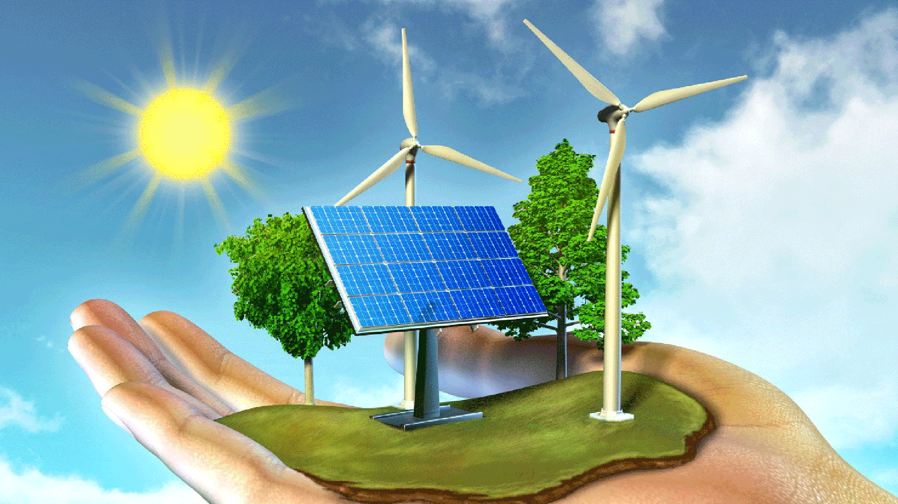
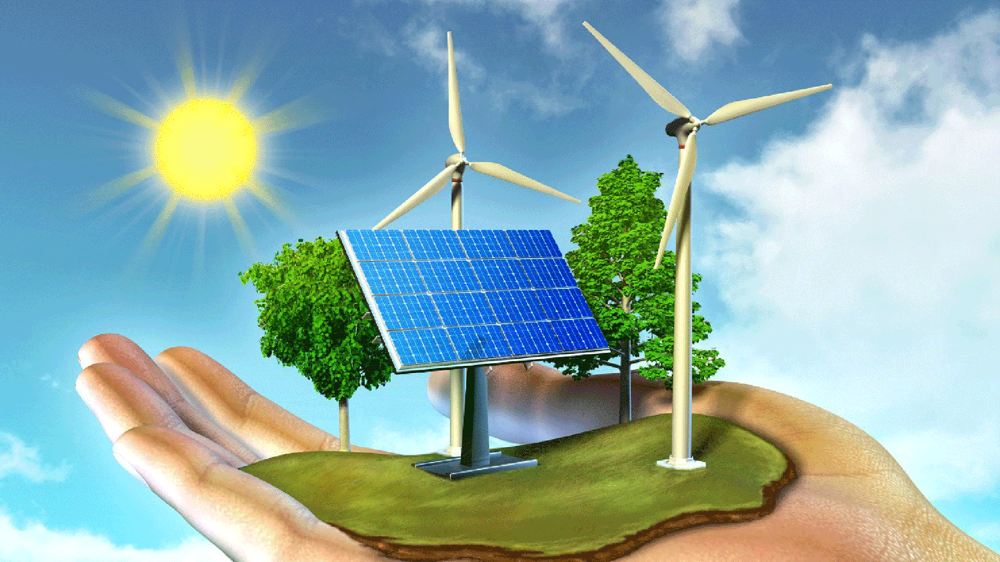

Energía Solar
La energía solar es la energía contenida en la radiación solar. Este tipo de energía renovable se genera mediante reacciones de fusión nuclear en el Sol. La radiación viaja hacia la Tierra mediante la radiación electromagnética y, posteriormente, puede ser aprovechada.
La energía solar se puede aprovechar en forma de energía térmica o energía eléctrica, para su consumo posterior allá donde se necesite. Cuando se trata de energía térmica obtenemos calor para calentar un fluido.
¿Cómo se produce la energía solar?
La energía solar se puede captar a través de células fotoeléctricas (que conforman los paneles fotovoltaicos que todos conocemos), heliostatos o colectores solares, que posteriormente la transforman en energía solar térmica (a través de la temperatura) o energía solar fotovoltaica (a través de la luz). También puede aprovecharse de forma pasiva con técnicas de arquitectura bioclimática y sostenible, como veremos a continuación.
La energía solar es una de las fuentes de energías renovables más fáciles de producir, especialmente la solar fotovoltaica, lo que está haciendo que se esté extendiendo su uso en las zonas climáticas con más horas de sol. Y España no es una excepción a esta regla – aunque todavía tenemos mucho margen de mejora para seguir transformando la energía procedente de fuentes no renovables (petróleo o carbón) en proveniente de fuentes renovables.
Beneficios de la Energía solar
 

La energía solar surge como una nueva alternativa de consumo de energía responsable con el medio ambiente, ante al impacto generado por la energía no renovable.
Entre sus beneficios están:
- Es renovable.
- Es una fuente de energía ilimitada.
- Es la fuente de energía más limpia y no pone en peligro ni incrementa el calentamiento global, debido a que no produce gases de efecto invernadero ni subproductos peligrosos para el medio ambiente.
- Tiene un bajo costo de aprovechamiento, tras la inversión inicial en la fabricación de los componentes y la instalación, que es la que puede resultar más costosa.
- Se puede producir energía limpia que resulta más económica que la que se adquiere por medio de la red.
- Está disponible en todo el planeta, por lo que se convierte en la mejor forma de proveer electricidad a lugares aislados, donde el costo de instalar líneas de distribución de electricidad es demasiado alto.
- La tecnología permite convertir la energía solar en electricidad por medio de dispositivos fotovoltaicos y de energía solar térmica.
- Reduce el uso de combustibles fósiles.
- Reduce las importaciones energéticas.
- Genera empleo en las zonas donde se instala.
La energía del futuro
Según informes de Greenpeace, la fotovoltaica podrá suministrar electricidad a dos tercios de la población mundial en 2030. Y según un estudio publicado en 2007 por el Consejo Mundial de Energía, para el año 2100 el 70 % de la energía consumida será de origen solar.
Por otro lado, algunos países, como es el caso de Tokelau, un archipiélago ubicado en el océano Pacífico, no cuentan con mix eléctrico, ya que obtienen toda la electricidad que necesitan del sol. El país lo forman unos 125 islotes que abarcan un área de 10 km² y cuenta con cerca de 1.500 habitantes. La situación geográfica del archipiélago hace que el uso de combustibles fósiles sea comparativamente mucho más caro y difícil de mantener que un sistema fotovoltaico.
La instalación de Tokelau es un ejemplo del que ya han tomado nota otros países de Oceanía. De hecho, las vecinas Islas Cook y el archipiélago de Tuvalu también pretenden abastecerse completamente a partir de energías renovables para el año 2020.